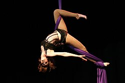
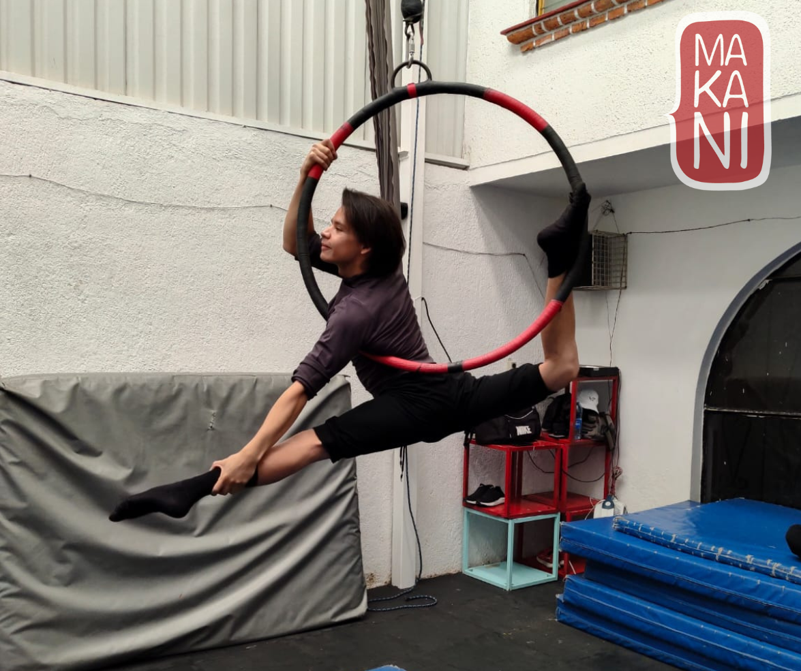
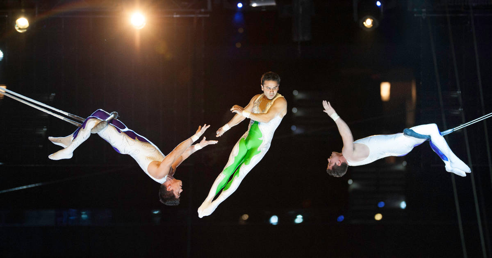

Tela acrobática
La Danza Aérea en Telas (también conocida como: Danza Aérea, Tela Aérea, Acrobacia en Tela, Tela Acrobática y otros) es una modalidad de práctica circense del grupo de los ejercicios aéreos, donde uno o varios artistas realizan evoluciones coreográficas y acrobáticas suspendidos en unas telas que penden del techo.

Aro aereo
La Lira o Aro Aéreo es una modalidad circense que desarrolla el control, la conciencia y la flexibilidad del cuerpo. Su forma circular y la opción de girar dotan a este elemento de infinitas posibilidades. Es una disciplina muy completa que trabaja fuerza, equilibrio, elasticidad y dominio corporal.

Trapecio
Es una disciplina circense que consiste en ejecutar figuras y acrobacias sobre una barra de metal, que en cuyos extremos está sujeta a dos cuerdas. Hay varios tipos de trapecios, pero en el Centro de Danza de Malú Pérez usan el fijo, que es un trapecio sin vuelo. Esto quiere decir que no tiene vaivén y las figuras que se realizan son de movimientos lentos y de toque coreográfico. Porque, además de ser un ejercicio para tonificar todo el cuerpo, el trapecio es una herramienta de expresión artística.

| Día | Disciplina | Horario |
|---|---|---|
| Lunes | Tela Acrobatica | 5:00 PM - 6:30 PM |
| Miércoles | Aro Aéreo | 6:00 PM - 7:30 PM |
| Viernes | Trapecio | 4:30 PM - 6:00 PM |